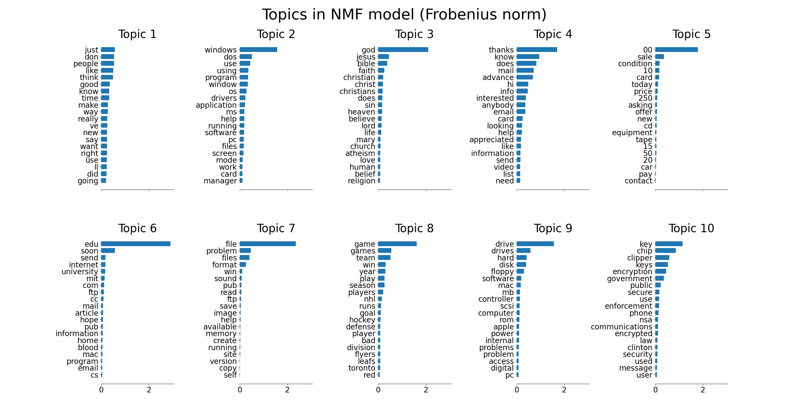
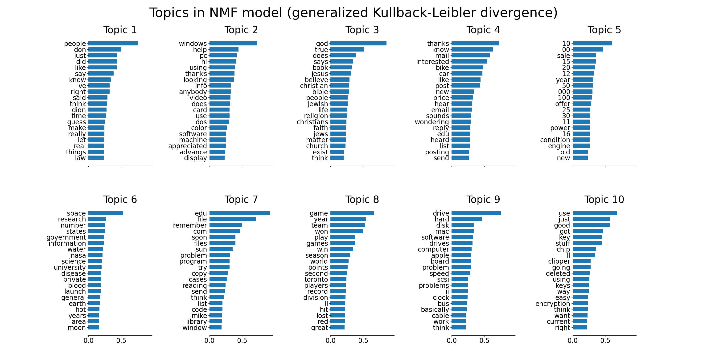
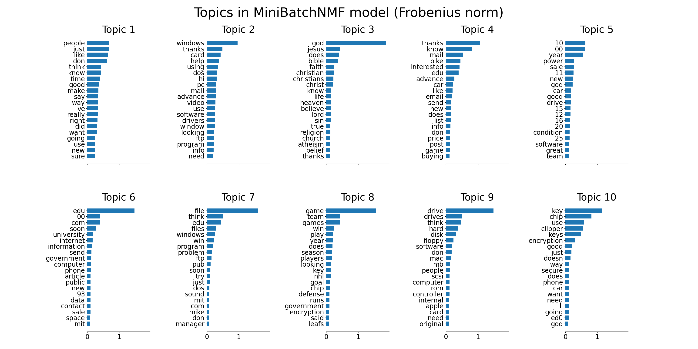
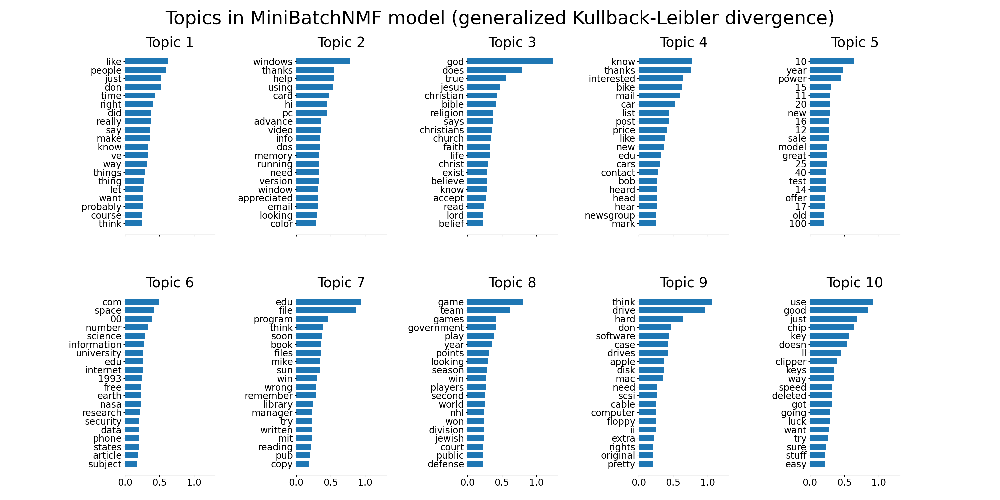
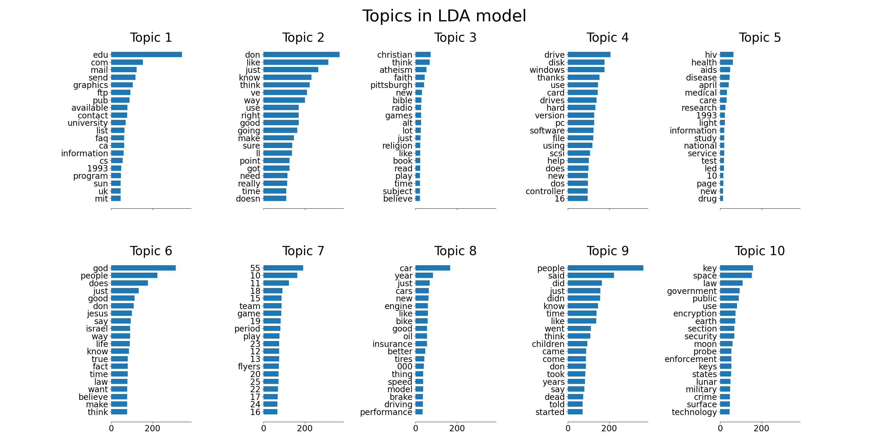

Note
Go to the end to download the full example code or to run this example in your browser via Binder
Topic extraction with Non-negative Matrix Factorization and Latent Dirichlet Allocation¶
This is an example of applying NMF and
LatentDirichletAllocation on a corpus
of documents and extract additive models of the topic structure of the
corpus. The output is a plot of topics, each represented as bar plot
using top few words based on weights.
Non-negative Matrix Factorization is applied with two different objective functions: the Frobenius norm, and the generalized Kullback-Leibler divergence. The latter is equivalent to Probabilistic Latent Semantic Indexing.
The default parameters (n_samples / n_features / n_components) should make the example runnable in a couple of tens of seconds. You can try to increase the dimensions of the problem, but be aware that the time complexity is polynomial in NMF. In LDA, the time complexity is proportional to (n_samples * iterations).
- 
- 
- 
- 
- 
Loading dataset...
done in 0.753s.
Extracting tf-idf features for NMF...
done in 0.159s.
Extracting tf features for LDA...
done in 0.156s.
Fitting the NMF model (Frobenius norm) with tf-idf features, n_samples=2000 and n_features=1000...
done in 0.067s.
Fitting the NMF model (generalized Kullback-Leibler divergence) with tf-idf features, n_samples=2000 and n_features=1000...
done in 0.923s.
Fitting the MiniBatchNMF model (Frobenius norm) with tf-idf features, n_samples=2000 and n_features=1000, batch_size=128...
done in 0.072s.
Fitting the MiniBatchNMF model (generalized Kullback-Leibler divergence) with tf-idf features, n_samples=2000 and n_features=1000, batch_size=128...
done in 0.186s.
Fitting LDA models with tf features, n_samples=2000 and n_features=1000...
done in 1.893s.
# Author: Olivier Grisel <olivier.grisel@ensta.org>
# Lars Buitinck
# Chyi-Kwei Yau <chyikwei.yau@gmail.com>
# License: BSD 3 clause
from time import time
import matplotlib.pyplot as plt
from sklearn.datasets import fetch_20newsgroups
from sklearn.decomposition import NMF, LatentDirichletAllocation, MiniBatchNMF
from sklearn.feature_extraction.text import CountVectorizer, TfidfVectorizer
n_samples = 2000
n_features = 1000
n_components = 10
n_top_words = 20
batch_size = 128
init = "nndsvda"
def plot_top_words(model, feature_names, n_top_words, title):
fig, axes = plt.subplots(2, 5, figsize=(30, 15), sharex=True)
axes = axes.flatten()
for topic_idx, topic in enumerate(model.components_):
top_features_ind = topic.argsort()[-n_top_words:]
top_features = feature_names[top_features_ind]
weights = topic[top_features_ind]
ax = axes[topic_idx]
ax.barh(top_features, weights, height=0.7)
ax.set_title(f"Topic {topic_idx +1}", fontdict={"fontsize": 30})
ax.tick_params(axis="both", which="major", labelsize=20)
for i in "top right left".split():
ax.spines[i].set_visible(False)
fig.suptitle(title, fontsize=40)
plt.subplots_adjust(top=0.90, bottom=0.05, wspace=0.90, hspace=0.3)
plt.show()
# Load the 20 newsgroups dataset and vectorize it. We use a few heuristics
# to filter out useless terms early on: the posts are stripped of headers,
# footers and quoted replies, and common English words, words occurring in
# only one document or in at least 95% of the documents are removed.
print("Loading dataset...")
t0 = time()
data, _ = fetch_20newsgroups(
shuffle=True,
random_state=1,
remove=("headers", "footers", "quotes"),
return_X_y=True,
)
data_samples = data[:n_samples]
print("done in %0.3fs." % (time() - t0))
# Use tf-idf features for NMF.
print("Extracting tf-idf features for NMF...")
tfidf_vectorizer = TfidfVectorizer(
max_df=0.95, min_df=2, max_features=n_features, stop_words="english"
)
t0 = time()
tfidf = tfidf_vectorizer.fit_transform(data_samples)
print("done in %0.3fs." % (time() - t0))
# Use tf (raw term count) features for LDA.
print("Extracting tf features for LDA...")
tf_vectorizer = CountVectorizer(
max_df=0.95, min_df=2, max_features=n_features, stop_words="english"
)
t0 = time()
tf = tf_vectorizer.fit_transform(data_samples)
print("done in %0.3fs." % (time() - t0))
print()
# Fit the NMF model
print(
"Fitting the NMF model (Frobenius norm) with tf-idf features, "
"n_samples=%d and n_features=%d..." % (n_samples, n_features)
)
t0 = time()
nmf = NMF(
n_components=n_components,
random_state=1,
init=init,
beta_loss="frobenius",
alpha_W=0.00005,
alpha_H=0.00005,
l1_ratio=1,
).fit(tfidf)
print("done in %0.3fs." % (time() - t0))
tfidf_feature_names = tfidf_vectorizer.get_feature_names_out()
plot_top_words(
nmf, tfidf_feature_names, n_top_words, "Topics in NMF model (Frobenius norm)"
)
# Fit the NMF model
print(
"\n" * 2,
"Fitting the NMF model (generalized Kullback-Leibler "
"divergence) with tf-idf features, n_samples=%d and n_features=%d..."
% (n_samples, n_features),
)
t0 = time()
nmf = NMF(
n_components=n_components,
random_state=1,
init=init,
beta_loss="kullback-leibler",
solver="mu",
max_iter=1000,
alpha_W=0.00005,
alpha_H=0.00005,
l1_ratio=0.5,
).fit(tfidf)
print("done in %0.3fs." % (time() - t0))
tfidf_feature_names = tfidf_vectorizer.get_feature_names_out()
plot_top_words(
nmf,
tfidf_feature_names,
n_top_words,
"Topics in NMF model (generalized Kullback-Leibler divergence)",
)
# Fit the MiniBatchNMF model
print(
"\n" * 2,
"Fitting the MiniBatchNMF model (Frobenius norm) with tf-idf "
"features, n_samples=%d and n_features=%d, batch_size=%d..."
% (n_samples, n_features, batch_size),
)
t0 = time()
mbnmf = MiniBatchNMF(
n_components=n_components,
random_state=1,
batch_size=batch_size,
init=init,
beta_loss="frobenius",
alpha_W=0.00005,
alpha_H=0.00005,
l1_ratio=0.5,
).fit(tfidf)
print("done in %0.3fs." % (time() - t0))
tfidf_feature_names = tfidf_vectorizer.get_feature_names_out()
plot_top_words(
mbnmf,
tfidf_feature_names,
n_top_words,
"Topics in MiniBatchNMF model (Frobenius norm)",
)
# Fit the MiniBatchNMF model
print(
"\n" * 2,
"Fitting the MiniBatchNMF model (generalized Kullback-Leibler "
"divergence) with tf-idf features, n_samples=%d and n_features=%d, "
"batch_size=%d..." % (n_samples, n_features, batch_size),
)
t0 = time()
mbnmf = MiniBatchNMF(
n_components=n_components,
random_state=1,
batch_size=batch_size,
init=init,
beta_loss="kullback-leibler",
alpha_W=0.00005,
alpha_H=0.00005,
l1_ratio=0.5,
).fit(tfidf)
print("done in %0.3fs." % (time() - t0))
tfidf_feature_names = tfidf_vectorizer.get_feature_names_out()
plot_top_words(
mbnmf,
tfidf_feature_names,
n_top_words,
"Topics in MiniBatchNMF model (generalized Kullback-Leibler divergence)",
)
print(
"\n" * 2,
"Fitting LDA models with tf features, n_samples=%d and n_features=%d..."
% (n_samples, n_features),
)
lda = LatentDirichletAllocation(
n_components=n_components,
max_iter=5,
learning_method="online",
learning_offset=50.0,
random_state=0,
)
t0 = time()
lda.fit(tf)
print("done in %0.3fs." % (time() - t0))
tf_feature_names = tf_vectorizer.get_feature_names_out()
plot_top_words(lda, tf_feature_names, n_top_words, "Topics in LDA model")
Total running time of the script: (0 minutes 8.165 seconds)